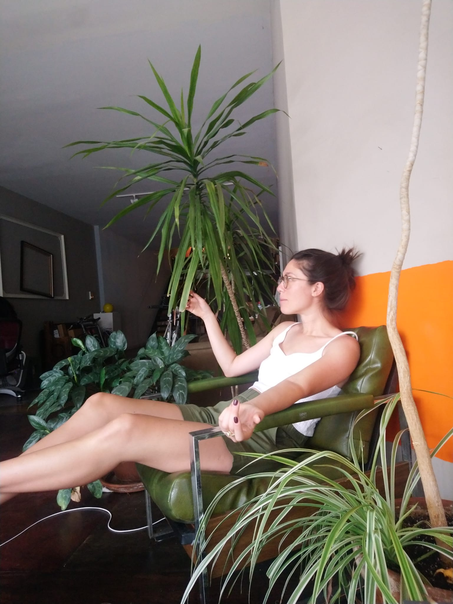

Home
Bunker.inks is a creative agency that specializes in community and character development
It came to us on a hot summer day in August, 2021 in East Williamsburg, Brooklyn. The heat was sweltering and sweetened the stench of the city. (Too much alliteration?)
In a fit of delirium we asked “what would happen if we opened a temporary tattoo shop?” We got to work right away (after a quick matcha affogato). Sat in front of a notepad and pen, we developed a catalogue of works like “banana with shadow detail,” “Jessica,” and “trash.” Temporary tattoos, our initial concept, exploded into a constellation of experiences that challenge people to see things in a whole new way.
Today, we ring sleighbells for events, food experiences, and media campaigns in two locations. Our central campus in New York, New York is optimized for temporary tattoos and special events while our satellite campus in Ann Arbor, Michigan, develops food experiences and media campaigns. Regardless of the experience, you can expect: us. We love that for you. Come bunk. (We are still working on our tagline.) You might not regret it.
For business inquiries, message us on Instagram.

Our founders: Bianca, Devon, John, and Phil